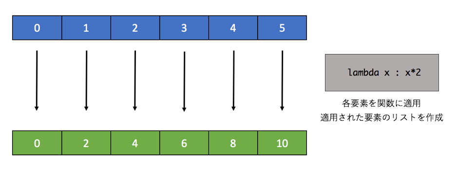
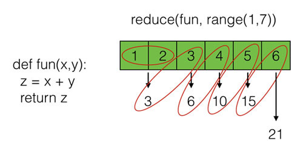

関数型プログラミング
本章では今までのオブジェクト指向から若干趣旨を変え、 関数型と呼ばれるプログラミングの概念について扱いたいと思います。 関数型言語にもいくつか種類があり、最古の最も有名なものはLispです。 それ以外にもHaskelやOcaml、そのほかさまざまな言語があります。
Python は関数型言語ではないもののこれらの関数型言語が持つ独特なテクニックが使えます。 例えば後ほど説明する「関数渡し」と「高階関数」、そして map や filter と言った処理、さらには「リスト内包表記」といったものです。 後の章でも扱いますが、この関数型言語のテクニックをオブジェクト指向に取り入れることで、 より綺麗なオブジェクト指向のコードを書くことができるようになります。 オブジェクト指向についての話題はまだ終わっていませんが、ちょうどいい区切りにいるためここで説明いたします。
本章ではまず関数型言語のErlang を使って関数型言語の特徴を説明したあとで、 実際にPythonを使って関数型言語のようなコードを書く方法について説明します。E rlangは関数型言語であるものの、比較的手続き型言語の文法に似ている言語です。 関数型言語としての側面よりも、並列性や頑健性に優れている言語として有名かもしれません。 関数型の特徴を一言でいってしまうと以下のようなものになります。
- 副作用が発生しにくいコード
- 関数になんでもやらせる
それぞれ簡単に解説してみます。
副作用を減らす
言語によって変わってくるかと思いますが、副作用を減らすための関数型の特徴で一番有名なのは 「変数に再代入できない」というものではないかと思います。 たとえばPythonだと以下のコードは問題ありません。
>>> num = 5 >>> num = 10
一方、Erlangだとこれと同等のことをするコードは以下のような結果となります。(Erlang のシェルを使っています)
Eshell V6.3 (abort with ^G) 1> Num = 5. 5 2> Num = 10. ** exception error: no match of right hand side value 10
Erlangの補足 変数は大文字から始まる 文末の . は式の終わりを示す(最初はCやJavaの;と同じという認識でOK) * 変数の型はPythonと同じく動的に決まる
変数 Num への1度目の代入は問題ありませんが、2度目の代入(再代入)をしようとしてエラーが出ています。 これは正確には代入というよりもパターンマッチの機構に起因してエラーが発生しているのですが、 「Erlangの変数には値を1度しか代入できない」と思っていただければいいと思います。 変数Aの中身を変更したい場合は変数Bを新しく用意してあげる必要があります。 変数を使いまわせないというデメリットもあるのですが、これは変数の中身が常に同じものであることを保証するというメリットがあります。 たとえば「意図しない箇所から内容を書き換えられる(バグ)」は発生しないので、 自分が一度設定した値は最後まで残り続けます。 そのため、デバッグなどもしやすい場合が多いかと思います。
関数になんでもやらせる
「関数型」という名前からわかるように、関数型言語ではとにかく関数になんでもやらせます。 たとえば関数を変数に代入したり、高階関数やクロージャといった概念を多用したりします。
たとえば、数列から偶数を見つけるプログラムを書くとしましょう。 今まで学んできたPythonのプログラムだと次のようになると思います。
even_list = [] for i in range(10): if(i % 2 == 0): even_list.append(i) print(even_list) # [0, 2, 4, 6, 8]
整数のリストを走査していき、それが偶数の場合は偶数のリストにどんどん追加していっています。 for 文と if 文の組み合わせで実現されています。
これがErlangだと、たとえば以下のように書けます。
1> Is_even = fun(X) -> X rem 2 =:= 0 end. #Fun<erl_eval.6.90072148> 2> Even_list = lists:filter(Is_even, lists:seq(0, 9)). [0,2,4,6,8]
たった2行で python と同じことが実現できています。 このErlangのコードがなにをやっているか説明しましょう。 まず1行目で引数Xが偶数か奇数かを判定する関数を作り、それを変数 Is_even に代入しています。 そして2行目でその変数に代入された関数を[0,1,2..,8,9]というリストに適用して判定がTrueとなった要素だけを取り出しています。 ひと目見ただけでもPythonの手続き型のコードと全然違うことが分かると思います。 関数でリストをフィルタ(条件にマッチしたものだけ取り出す)してあげています。
CやJava(最近のものは別ですが)では、そもそもこういった概念は使えないか、非常に使いにくいものとなっています。 PythonやJavaScriptといった「スクリプト系」の言語はこれらの概念も利用できますが、 あくまでもオマケ的な側面が強いです。一方、関数型はこれらの機能を前面に押し出しています。
長々とErlangの説明をするのも連載の趣旨から外れるのでこのあたりで切り上げたいと思いますが、 要するにfor文などでデータを制御するのではなく、データ構造に対して制御を適用するような処理をします。 個人的な見解ですが、手続き型言語は「制御ありき。データは二の次」というような思想があり、 関数型は「まずデータがあり、それに処理を適用」というような思想があるように思えます。
Pythonの関数型
Pythonなどのスクリプト系言語は、関数型に近いことがある程度できます。 利用方法は様々ありますが、おおまかには「関数渡しを関数やメソッドのカスタマイズに使う」こと、 それから「リストなどのデータ構造を関数で制御する」ものに分けられます。
Python のデータは全てオブジェクトであるといいましたが、実は関数も「関数型」というオブジェクトです。 他の言語を学ばれたことがある人であれば「え、関数は関数であって型じゃないでしょ?」と思われたかたもしれません。 論より証拠で、さっそく例を示しましょう。
# 関数の定義 def test(): return 1 print('call test: {}'.format(test())) # call test: 1 print('type test: {}'.format(type(test))) # type test: <class 'function'> # 関数を変数に代入 test2 = test print('call test2: {}'.format(test2())) # call test2: 1 print('type test2: {}'.format(type(test2))) # type test2: <class 'function'>
型が'function'とでていて、関数型であることがわかります。 そしてオブジェクトであるため変数への代入もできており、なおかつそれを呼び出すこともできます。 しかし、関数も型だとわかったところで、実際にどのように使うか想像がつかないかもしれません。
関数渡し
一番簡単な利用例として関数渡しと呼ばれる使い方を紹介します。 これは Python の「関数もオブジェクトである」という性質を使ったものです。 以下のコードを見て下さい。
# 関数を呼び出す関数 (高階関数) def fun1(fun, text): fun(text) # 呼び出される普通の関数 def fun2(text): print('fun2: ' + text) # 高階関数に関数を渡して利用 fun1(fun2, 'hello') # fun2: 5
関数fun1は第一引数で関数、第二引数で文字列を受け取ります。 その受け取った関数を自らの関数内で呼び出しており、その引数に第二引数の文字列を渡しています。 上記の例で呼び出される側の関数 fun2 は普通の関数ですが、呼び出す側の関数は「高階関数」と呼ばれています。 高階(こうかい)というと分かりにくいですが、ようするに関数が2階建てのように使われているとイメージしてもらえれば分かりやすいかもしれません。 高い階層ということなので3階建て以上もできますが、一般的にはやりません。 サンプルでは高階関数を呼び出していますが、 出力を見ると実際に処理をしているのは高階関数内部で呼び出された引数の関数であることがわかります。
このような単純な例だと関数渡しのメリットはあまりないのですが、 自作や一般的なフレームワークの処理の「一部をカスタマイズ」するような場合に利用すると便利です。 たとえばHttpサーバの実装をする際に、「要求を受け取って処理」というのをフレームワークにし、具体的に何の要求か、 その要求に対応するアクションは何かをカスタマイズするという用途などが考えられます。
HTTP サーバを書くと難しすぎるのでカスタマイズ可能な電卓を作ることで「フレームワークの拡張」を体験してみたいと思います。 まず以下の整数用の電卓のクラスがあります。
# フレームワーク (手を加えない) class Calc: # 初期化でカスタマイズ用の関数定義を受取り登録 def __init__(self, operation_list): self.operation_dict = {} for operation_tuple in operation_list: (operation, method) = operation_tuple self.operation_dict[operation] = method # イベントドリブンで電卓として動く def run(self): while True: print('please input your calculation') input_text = input() words = input_text.split() if words[0] == 'exit': return if len(words) < 3: continue if words[0] not in self.operation_dict: continue # カスタマイズされた関数を呼び出す fun = self.operation_dict[words[0]] print(fun(int(words[1]), int(words[2])))
このクラスは非常にシンプルですがフレームワークとしてカスタマイズできるようになっています。 まずコンストラクタでタプルの計算処理の定義 (計算の種類, その計算をする関数) をリストで並べたものを渡します。 コンストラクタは辞書データにそれを登録しています。 そしてrun メソッドでは標準入力を読み取り、与えられた計算の種類に応じてその計算をします。 具体的には標準入力を空白で分解し、その一番目の要素に応じた辞書に登録された計算処理を第二、第三の要素に適用するというものです。 たとえば文字列として “plus 2 3” を渡すと 2,3 に対して plus 処理をします。 while True で無限ループになっているため、exit と入力されるまでは永遠に計算が続きます。 ここで注意してほしいのは plus 処理というのはこのクラスの内部には定義されていないことです。 それはこのフレームワークを使う人によりカスタマイズされて初めて使えるようになります。
次にこのフレームワークを利用するために拡張する処理を自分で定義し、 それをコンストラクタで登録します。 今回はコンストラクタで定義しましたが、「メソッドで定義を追加」ということもよくします。
def add(a, b): return a + b def decrease(a, b): return a - b calc = Calc([("plus", add), ("minus", decrease)])
関数として add, decrease を定義していて、その処理は足し算引き算となります。 そして先程のフレームワーク Calc を初期化する際にそれらを定義にしたがってリスト上のタプルで登録しています。 今回であれば add を plus という名前で登録しています。
calc.run() please input your calculation plus 2 3 5 please input your calculation minus 5 2 3 please input your calculation exit
作成したインスタンスの run メソッドを呼び出すと自分で定義した処理が呼び出せていることが分かります。 同じ要領で掛け算や割り算、もっと複雑な計算も定義できます。
前書の最初のほうで Python プログラムの体験として以下のような GUI のプログラムの紹介をしており、それは以下のようなものでした。
真ん中にあるボタンを押すと、数字がどんどん増えていくという簡単なカウンターアプリケーションです。 このアプリケーションのプログラムは以下のようなものとなっています。
import tkinter counter = 0 font = ("Helevetica", 32, "bold") button = tkinter.Button(font=font, text=str(counter)) # 処理を作成(カウンターの数字を増やす) def clicked(): global counter, button counter = counter + 1 button.config(text=str(counter)) # GUI のライブラリに処理を登録 button.config(command=clicked) button.pack() button.mainloop()
この GUI のライブラリはクリックされた時の処理を登録できるようになっており、 自分でその処理をする関数を定義し、それをボタンが押された時のアクションとして登録しています。 こうすることで GUI のアプリケーションの動きを自分でカスタマイズしているのです。 GUI 自体の実装は先程の電卓プログラムよりはるかに複雑なのですが、 カスタマイズをするだけであれば先ほどの電卓の例とそれほど違いはありません。 このようなことができるのが「関数渡し」や「高階関数」の強さだと言えます。
クロージャ
高階関数の高度な使い方として「関数をカスタマイズして返す関数」を作るということもできます。 これは先程まで行っていたことと逆のようなもので、このようなテクニックはクロージャと呼ばれています。 クロージャの概念はプログラミング初級者には難しいのですが、 そのイメージとしては「テンプレートとなる関数からカスタム関数を生成する」ようなものとなります。
クロージャも例を使って説明しましょう。
# 関数を作る関数 クロージャ def adder(x): # クロージャが返す関数 def fun(y): # x はクロージャの引数、y は作成される関数の引数 return x + y # 作成した関数を返す return fun adder5 = adder(5) print(adder5(10)) # 15 adder7 = adder(7) print(adder7(10)) # 17
関数adderは内部で関数funを作成し、それをreturn文で返しています。 この adder がクロージャの関数で、内部の fun はクロージャが作成する関数となります。 注目して欲しいのは外側の関数であるadderの引数xを、 内部で作成しているfunの中で利用しているということです。 このxにはadderが呼び出された際に渡された値が入っています。 具体的には"adder(5)"とした場合は5です。 その際、内部の関数生成のコードは実質的に次のようなものとなっています。
def fun(y): return 5 + y
クロージャの x は 内部の関数にとっては 5 と同じで、このとき x は 5 として「束縛」されていると言われます。 この内部の変数が5に束縛された関数がreturn文で返され、変数adder5に格納されます。 当然ながらadder5は関数として利用可能で、 その実行結果は関数生成の行の次に示されたとおり「 5 + 渡された引数10 」で15 となっています。 adderのなかの関数がテンプレートで、adder5がそれをベースにして作られた関数だと思ってもらえれば構いません。 ただ、クロージャのコードを Python で見かけることはほとんどありません。 関数渡しに比べるとその使いどころが難しいかもしれません。
ラムダ式
今までの関数はdefを使って宣言してきました。 ただ、関数渡しを利用する場合は「使い捨ての関数」を渡すだけで十分な場合があります。 そのような場合、ラムダ式(lambda)を使って無名関数を作ると簡単です。
lambda式は「lambda 引数: 式」という形で関数を書くと、 その関数をオブジェクトとして返します。 defによる関数の宣言と異なり、関数名がないことがわかります。 そのため「無名関数」と呼ばれているのです。 実際に利用してみます。
my_print = lambda x : print('my_print : {}'.format(x))
my_print('hello')
# my_print : hello
上記は引数 x を受け取り、それに “my_print : “ という文字列をつけて print する無名関数を作成し、 それを変数 my_print に格納して使っています。 このラムダ式は変数に代入されて関数として使われていますが、変数にいれなくても使うことができます。 試しにこのラムダで作られたものが何者なのか見てみます。
my_print = lambda x : print('my_print : {}'.format(x)) print(my_print) # <function <lambda> at 0x1013dad90>
インタプリタでラムダが返したもの(実際はオブジェクト)を評価してみるとラムダの関数だと評価されています。 変数に代入しなくても関数なので、いきなりこれを実行することもできます。
(lambda x : print('my_print : {}'.format(x)))('hello') # my_print
上記のコードは「(ラムダで作られた関数)(引数)」としています。 結果を見てもらうときちんと動作をしていることが分かります。
上記のラムダ式ですが、今までの関数の書き方であれば以下と同じです。
def my_print(x): print('my_print : {}'.format(x)) my_print('hello') # my_print : hello
ラムダと一般的な関数のどちらがプログラムとして分かりやすいかというと、 一般的には通常の関数の作り方だと思われます。 ただ、使いどころによってはラムダのほうが適する場所が存在します。 それが先ほどの「関数渡し」、それも簡単な処理の場合です。 具体例に関しては後ほど多く扱うのでラムダの利用場面については話を切り上げて、 ここではラムダの書き方をもういくつかご紹介したいと思います。
まず引数や返り値ですが、これも関数と同じでいくつか定義をすることができます。たとえば 2 つの引数をたして返す関数は以下のようになります。
adder = lambda x, y : x + y print(adder(2, 3)) 5
引数を複数とる場合はコンマでつなげ、 最後の式(この場合は x + y)が return 文なしに結果として返されていることがわかります。
lamdaが生成する関数もオブジェクトですので、リストなどに格納することもできます。 それほど使い道はないかもしれませんが、以下のように複数処理を連続で実施したい場合にときどき使います。
funcs = [(lambda x,y:x+y), (lambda x,y:x-y), (lambda x,y:x*y),(lambda x,y:x**y)] for fun in funcs: print(fun(5,10)) # 15 # -5 # 50 # 9765625
個人的にはPythonではlambda式は後ほど述べる filter といった関数以外ではそれほど多く使いません。 上記のような簡単な関数をその場限りで使うのにおいては便利ですが、 そうでない限りはdefで宣言し、それを必要に応じて呼び出すことのほうがコードとして分かりやすいです。
たとえば上記のコードは以下のように書き直せます。
def fun1(x,y): return x + y def fun2(x,y): return x * y def fun3(x,y): return x ** y funcs = [fun1, fun2, fun3] for fun in funcs: print(fun(5,10))
defを使うと不必要に宣言数を増やしてしまいますし、lambdaで複雑な処理を書くと非常に見づらいです。 それぞれのメリット、デメリットを考えて適切に利用する必要があります。 一般的には処理の内容が複雑であればdefで宣言し、簡単でかつ使いまわさない場合はlambdaを使うことになるかと思います。
関数を使ったデータの操作
Python は関数渡しで使うことを前提とした関数や、リスト内包表記とよばれる特殊なリストを生成する書式を持っています。 これらはかなり関数型の言語に近い使われかたをします。 必ずしもこれから学ぶ関数やリスト内包表記を使わなくても同じことを「手続き型(今まで学んだ Python プログラムのような書き方)」でも実現できます。 ただ、これから学ぶテクニックを使うことで、シンプルで高速なプログラムを作れることが多いです。
最初にフィルタと呼ばれる処理を紹介します。 Erlangでリストに対してfilter関数を使って偶数だけ取り出す処理をしました。 同じことをPythonで実行することもできます。 Python の filter 関数は第一引数に関数を受け取り、第二引数にリストを受け取ります。 渡された関数をリストの各要素に適用し、True となった要素だけから構成されたフィルターオブジェクトを返します。 必要であればリスト型にキャストをします。filter という名前が示す通り、リストをフィルタ処理しています。
def is_even(x): return x % 2 == 0 filter_object = filter(is_even, range(10)) print(list(filter_object)) # [0, 2, 4, 6, 8]
上記の例ではまず関数 is_even を宣言しています。%は剰余(あまり)をもとめる演算子なので、 「引数 x を2で割った余りが0か」ということを返しています。 filter 関数にこの is_even を第一引数として私、range(10) で 0 から9 までのリスト(正確にはrange型)を与えると、 与えられたリストに対して順番に関数を適用していき True となったものだけから構成されるリストを返します。 この filter の利用例を図に示します。

先ほど学んだラムダはこれらの関数を受け取る関数と相性がいいです。 先ほどの例ではわざわざ偶数判定の関数を定義していましたが、 それをラムダに置き換えると以下のようにコードが簡潔になります。
filter_object = filter(lambda x:x%2 == 0, range(10)) print(list(filter_object)) # [0, 2, 4, 6, 8]
ラムダについて知らなければわからないコードですが、ラムダを知っている人にとっては簡潔です。 自分のコードで使うか使わないかは自分の判断で選べばいいでしょうが、 ラムダを使う人は多くいますので少なくとも読めるようにはなっておく必要があります。
map
次にmap関数です。こちらはリストの各要素に関数を適用していき、 適用された値をリストにするというものです。 filter オブジェクトと同様に返される値はマップオブジェクトであるため、 それをリストにキャストして上げる必要があります。 やっていること自体は難しくないので、こちらも例を示します。 以下では range 関数で作成した [0,1,2,..8,9] というリストの要素を2倍にしています。
map_object = map(lambda x:x*2, range(10)) print(list(map_object)) # [0, 2, 4, 6, 8, 10, 12, 14, 16, 18]
適用する関数を map の第一引数に与え、関数が適用されるリストは第二引数に与えられています。 filter 関数と同じです。 map の図を以下に記載します。

先の filter や map では比較的単純な例でしたが、四則演算だけでなくメソッドで処理を加える事もできます。 ラムダの引数に対してメソッドを呼び出し、テキストデータを大文字にしています。
text_list = ['ab', 'cd', 'ef'] map_object = map(lambda x:x.upper(), text_list) print(list(map_object)) ['AB', 'CD', 'EF']
テキストを大文字にすることもそれほど難しくない処理ですが、たとえば自分で作ったクラスについてこれを適用することもできます。 便利といえば便利なのですが、自分以外にその処理がなにをやっているか分からなくなるため、 適切なコメント等を残すか、使わないという選択をする必要があると思います。 返り値のリストが不要で単にオブジェクトのメソッドをまとめて呼びたい場合は for 文を使うことが無難です。
なお、map や後ほど扱うリスト内包表記といったリストを生成する処理は必ずしも元のリストの値を使う必要はありません。たんに「ある長さのリストを生成する」ためにも使えます。たとえばランダムな数値を持つリストを生成する場合、以下のようなコードとなります。
import random # 普通の関数 def get_random_list1(length): random_list = [] for i in range(length): random_list.append(random.randint(0, 100)) return random_list # map を使った関数 def get_random_list2(length): return list(map(lambda x: random.randint(0, 100), range(length))) print(get_random_list1(10)) # [24, 25, 80, 78, 34, 11, 23, 6, 28, 33] print(get_random_list2(10)) # [83, 26, 37, 95, 52, 36, 28, 12, 89, 71]
get_random_list1 関数は for 文を使って与えられた長さのぶんだけループを回し、 それでランダムに生成された数値をリストに詰めて返しています。 一方、get_random_list2 は同じことを map で実現しています。 for 文で要素の i を使わなくていいように、map に渡された関数もその引数を使わなくて構いません。 こういうことをできると知っておくべきかと思いますが、 コードを読む人にとって分かりにくいため積極的に使うようなテクニックではないかもしれません。
reduce
最後にreduceです。これは「たたみ込み」と呼ばれる処理で、別言語だとfoldなどという呼び方をしているかもしれません。 mapやfilterに比べるとちょっと複雑で、利用場面はそれほど多くないと思います。
reduce(fold)の処理概念を以下の図に記します。

図を見てもらうとわかるように、リストの「要素N番目の処理結果をN + 1番目で利用」ということをリストの先頭から末尾まで繰り返していき、最後の処理結果を返すというものです。
書き下すと、
- 1番目と2番目の要素を使いAを得る
- 3番目とAを使いBを得る
- 4番目とBを使いCを得る
- 最後の要素である5番目とCを使いDを得る
- Dを返す
というような動きになります。
上記の図を実現するコードを以下に示します。なお、python2 は reduce をグローバル関数として利用できましたが、python3 では functools というモジュールに属するようになっています。
import functools def adder(a, b): return a + b result = functools.reduce(adder, range(1, 7)) print(result) # 21
プログラムもfilterやmapと同じように、関数の定義をリストに適用します。 ただ、引数に与える関数の引数が2つになっているのが今までと異なる点です。 今回は分かりやすいように関数を定義しましたが、簡単なものであればラムダが使われることが多いです。
この reduce なのですが、先ほどのような「リストの全ての要素を使って値を得る」というものよりも 「リストの中から何かひとつの要素を選ぶ」といった使い方のほうが多いかもしれません。
そのようなときは「引数で与えられた2つの関数を比較し、条件に合致するほうを返す関数」を定義し、 それをリストに対して reduce で適用するということをします。そうするとリストの全要素に対してその関数が適用され、 最も条件にあうリストの要素が取得できます。 以下のサンプルでは「2値を比較して大きい方を返す処理」を繰り返してランダムに生成された数値のリストから最大値を選ぶという処理をしています。
import functools, random # 2値を比較して条件に合致したほうの値を返す(今回は大きいほうを返す) def get_bigger(a, b): if(a > b): return a else: return b # ランダムな数値をリストにつめる random_list = [] for i in range(10): random_list.append(random.randint(0,100)) # リストのなかで最も条件に合致する要素を返す biggest = functools.reduce(get_bigger, random_list) print('list: {}'.format(random_list)) # list: [19, 67, 8, 27, 6, 7, 41, 50, 38, 31] print('biggest: {}'.format(biggest)) # biggest: 67
今回は数値のような簡単な例でしたが、2値の比較は複雑なオブジェクトに対しても実現できます。 for 文でリストから要素を取得するのが王道なのでしょうが、reduce でも同様のことができるというのは覚えておいて下さい。 関数型を使えるプログラマがよく使うテクニックです。
リスト内包表記
本章の最後にリスト内包表記を扱います。 リスト内包表記はリストを生成するための特別な書式で、そのイメージとしてはラムダとmap とfilterを同時に使うというものになります。 ただ、見た目が難しいので簡単な実例から紹介していきたいとおもいます。
まずmapに近い使い方です。 先ほどの要素2倍にするmap処理をリスト内包表記で書くと、以下のようになります。
list_ = [x*2 for x in range(10)] print(list_) # [0, 2, 4, 6, 8, 10, 12, 14, 16, 18]
1行目にある [ ] 内の式がリスト内包表記です。よく見るとfor文の使い方に似ています。 "for x in リスト"とすると、xにリストの要素が入ってループを回します。 その各要素xに対して"x * 2"という処理をしてリストを作成します。 通常の for 文によるループと違い、要素に対する処理が先頭にきています。 そしてこの処理が適用されたリストが返されます。
リスト内包表記が優れているところは先程のmap処理に加えて、同時にfilter処理もできることです。 たとえば偶数だけ抜き出し、それを2倍にするということもできます。
list_ = [x*2 for x in range(10) if x%2==0] print(list_) # [0, 4, 8, 12, 16]
先ほどの map の使い方と同様の例とほとんど同じですが、"for x in リスト"の後にif文が追加されているのがわかります。 このif文がTrueとなった要素だけ、リスト作成の対象となります。処理(今回は x*2)が適用された後に対してではなく、 適用される前(今回はx)に対してフィルタ処理がされていることに注意してください。
書式が複雑なためリスト内包表記は難しく見えるかもしれませんが、 以下のような構造になっていると思えば、理解しやすいかもしれません。

ちなみにリスト内包表記は、通常のループ文よりも高速に動作する場合が多いといわれています。 これはfor文のようにScriptとして一行一行処理されるのではなく、 Python内にあるバイナリでリストに対して処理を施すためです。 興味があればベンチマークを取ってみてもいいかもしれません。
一般的にはあまり知られていませんが、リスト内包表記以外にも「内包表記」があります。 以下にセット内包表記と辞書内法表記の例を示します。
# セット内包表記 set_ = {x * 2 for x in range(10)} print(set_) # {0, 2, 4, 6, 8, 10, 12, 14, 16, 18} print(type(set_)) # <class 'set'> # 辞書内法表記(タプルから辞書を作成) tupple_list = [('apple', 'red'), ('banana', 'yellow')] dict_ = {k.upper() : v for k, v in tupple_list} print(dict_) # {'BANANA': 'yellow', 'APPLE': 'red'} print(type(dict_)) # <class 'dict'> # 辞書内包表記(辞書から辞書を作成) dict1 = {'apple':'red', 'banana':'yellow'} dict2 = {k.upper() : v for k, v in dict1.items()} print(dict2) # {'BANANA': 'yellow', 'APPLE': 'red'} print(type(dict2)) # <class 'dict'>
書式はリスト内包表記と大きな違いがありませんが、囲むカッコだけ変わっています。 リスト内包表記に比べてこれらの利用場面はそれほど多くなく、積極的に利用すべきものではありません。
 印刷する
印刷する